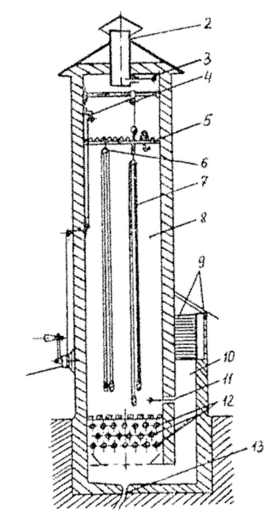

1.4.2 Особенности технического обслуживания
Отмачивание (оттаивание)
Доставленные на рукавную базу (пост) или в часть использованные на пожаре или учении напорные рукава должны полностью оттаять в теплом помещении. Для этого может быть использована ванна с водой (рис. 4). Чтобы ускорить процесс оттаивания, ванну закрывают сверху крышками и в нее подают теплую воду. Эта же ванна используется для отмачивания загрязненных напорных рукавов.
Мойка
После оттаивания или отмачивания напорные рукава подают на мойку. Загрязненные напорные рукава очищают от грязи при помощи специальных рукавомоечных машин, а при их отсутствии - щетками с использованием воды.
Внешний осмотр
Внешний осмотр напорных рукавов, находящихся в эксплуатации, проводят после каждого применения, но не реже одного раза в месяц, а при хранении на складе и рукавных базах - не реже одного раза в год.
Рукава подвергают осмотру на наличие маркировки, возможных внешних повреждений или дефектов.
Наружную поверхность напорного рукава, включая пожарные соединительные головки и места их соединения с напорным рукавом, проверяют внешним осмотром на изменение цвета, наличие пятен, порезов, проколов, смятий, трещин и т.д.
По результатам осмотра принимают решение об их испытании или ремонте.
Испытания
Испытания напорных рукавов, находящихся в эксплуатации, проводятся после каждого применения, но не реже одного раза в 6 месяцев. Напорные рукава испытывают на герметичность под давлением, указанным в таблице 2. После ремонта или по истечении гарантийного срока хранения, указанного в эксплуатационной документации, их испытывают на герметичность под давлением, указанным в таблице 3.
Напорные рукава из натуральных волокон (льняные и льноджутовые) перед испытаниями заполняют водой под давлением от 0,2 (2) до 0,4 (4) МПа (кг/см2) и выдерживают в течение 5 минут. Данные напорные рукава под испытательным давлением после намокания льняных нитей каркаса не должны иметь свищей, кроме пылевидных.
Напорные рукава допускается испытывать в виде линии до пяти штук одного условного прохода.
При гидравлическом испытании напорный рукав или линия из напорных рукавов присоединяется к насосу с манометром. На другой конец напорного рукава или линии присоединяется перекрывной пожарный ствол или трехходовое разветвление. В соединениях между испытываемыми рукавами и применяемой арматурой должна быть обеспечена герметичность. После удаления воздуха и заполнения линии водой постепенно поднимают давление воды в напорном рукаве до испытательного. Под этим давлением держат линию в течение времени, необходимого для осмотра напорного рукава (линии из напорных рукавов) по всей длине, и соединений в месте навязки их на пожарные соединительные головки. Появление свищей и капель воды не допускается (исключение составляют перколированные напорные рукава).
Результаты испытания заносятся в формуляр напорного рукава.
Сушка
Сушить напорные рукава можно в башенных, камерных и других сушилках. Башенная сушилка (рис. 10) должна иметь калорифер или другие приборы для подогрева воздуха.

Рис. 10. Схема башенной сушилки:
1 - лебедка; 2 - короб для отвода воздуха; 3 - шибер;
4 - трос; 5 - верхняя решетка; 6 - ролик для подвески;
7 - напорный рукав; 8 - сушильная камера; 9 - жалюзи;
10 - короб для подвода воздуха; 11 - шибер;
12 - калорифер; 13 - водосток
Развешивать напорные рукава для сушки нужно равномерно по всему сечению шахты. Плотность заполнения должна быть от 10 до 15 напорных рукавов на 1 м2. Подъем их производится лебедкой.
В камерных сушилках напорные рукава сушат свернутыми в свободную скатку с зазорами от 20 до 25 мм между витками.
При отсутствии рукавных сушилок напорные рукава следует сушить:
вне помещения при температуре воздуха плюс 20 °C и выше при относительной влажности не выше 80%. Их развешивают или раскладывают на решетчатый наклонный стеллаж. При этом они должны быть защищены от прямого действия солнечных лучей и осадков;
в помещении с достаточно нагретым воздухом или с теплоизлучающими приборами напорные рукава располагаются так же, как и в сушилках или на решетчатых стеллажах, на расстоянии не менее 1 м от теплоизлучающих приборов. В обоих случаях продолжительность сушки не должна превышать 24 часов.
Сушить напорные рукава следует согласно инструкции по эксплуатации для каждого типа напорного рукава.
ЗАПРЕЩАЕТСЯ сушить их непосредственно на отопительных батареях и котлах.
Не допускается подвешивать их для сушки на металлических неокрашенных предметах.
Скатка и перекатка
После сушки напорные рукава скатывают в одинарную или двойную скатку. Для скатывания может быть использовано специальное приспособление.
Во избежание преждевременного износа скатанных рукавов при длительном хранении может производиться их перекатка на другое ребро.
Необходимость и периодичность перекатки напорных рукавов на другое ребро указывается в эксплуатационной документации на конкретный напорный рукав.